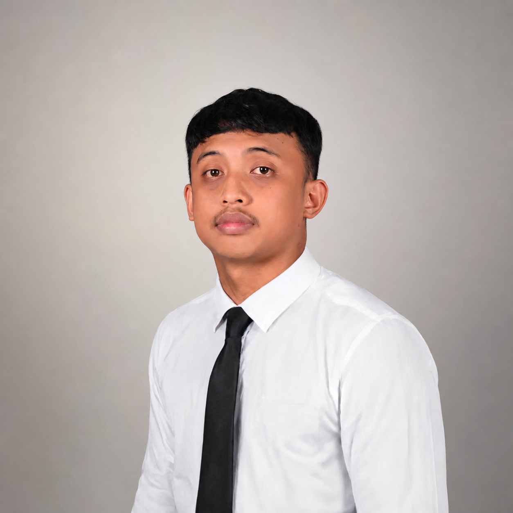
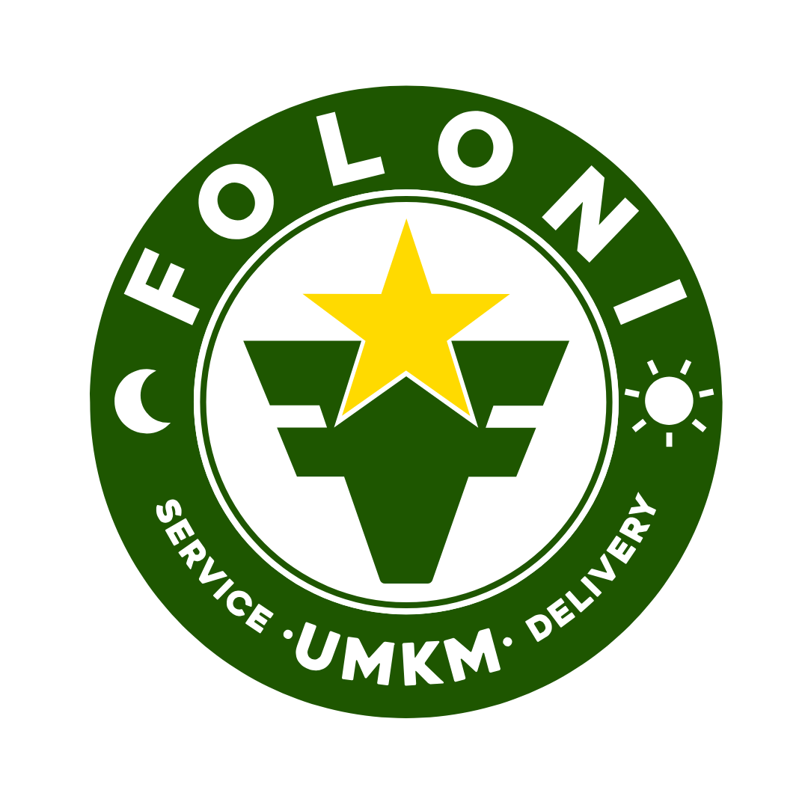
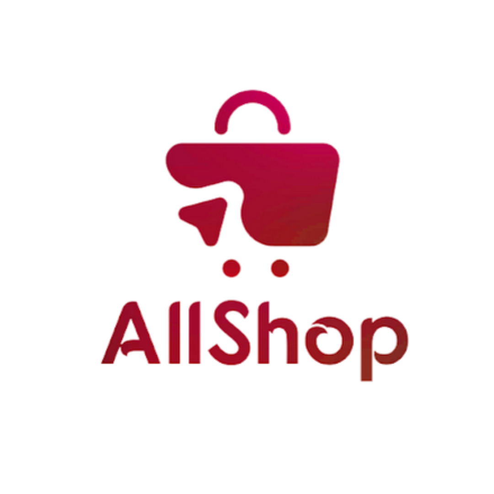

Front End Development
Building responsive layouts, clean components, structured pages, and user-facing interfaces that feel modern and reliable.
I build clean, responsive, and user-focused interfaces for web and Android. Alongside frontend development, I also bring experience in UI/UX, digital design, backend support, and QA / API testing using Postman.

Focused on building clear interfaces, improving user experience, and delivering digital products that feel structured, modern, and reliable.
I focus on frontend development for websites and Android-based products, with an approach that values clean interfaces, responsive implementation, and user-centered thinking.
Beyond frontend execution, I also contribute through UI/UX design, digital design needs, supporting backend workflows, and QA testing. This helps me work more holistically across projects — from interface ideas and visual structure, to implementation quality and API validation using Postman.
This portfolio is especially suited for projects that need clean interface execution with practical support across product flow and quality.
Front End Developer
Website interfaces, Android app interfaces, and responsive product screens
UI/UX, digital design, backend support, QA, and API testing with Postman
Building responsive layouts, clean components, structured pages, and user-facing interfaces that feel modern and reliable.
Designing and implementing screens that work consistently across mobile and website experiences with strong usability in mind.
Structuring user flows, wireframes, and interface layouts so products are easier to understand, navigate, and use.
Creating supporting visual assets for product communication, brand materials, promotions, and presentation-ready outputs.
Supporting web projects through admin features, data handling, system flow understanding, and coordination with backend needs.
Reviewing flows, identifying issues, and validating APIs with Postman to help keep product releases more stable and dependable.
My main role stays frontend-focused, with practical support across UI/UX, backend workflows, and product quality checks.
In several website projects, I also handled supporting backend-related work such as understanding data flow, coordinating feature logic, supporting admin pages, and helping make end-to-end website delivery more complete.
I am also comfortable reviewing feature behavior, identifying usability issues, and validating APIs with Postman to support smoother release quality and more reliable system behavior.

Front End, UI/UX, Digital Design & QA
Contributed to website and application initiatives through interface design, frontend collaboration, visual asset production, QA review, and product improvement across multiple digital touchpoints.
UI/UX Designer & QA Specialist
Built wireframes and responsive interface concepts for a trading-related application, while also reviewing flows and documenting QA findings to support a better product experience.

Freelance Digital Designer
Created digital communication materials and opening video assets by structuring storyboard direction, visual flow, and presentation output for a clearer brand message.
Featured projects are ordered by priority based on the strongest fit with frontend delivery for Android and website products. Some entries still use temporary placeholder previews until final project images are ready.
Seven primary projects that best represent my direction as a Front End Developer for Android and website.
Five additional projects that add more range across interface design, company website, branding, and digital content.